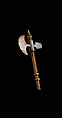
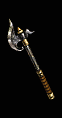

|

牙齒
手斧
The Gnasher
Hand Axe
|
單手傷害:
6 -
11 (平均傷害8)
等級需求:
5
耐久度:
28
武器基本速度:
[0]
+60-70% 增強傷害
(變動)
20% 造成壓碎性傷害機率
50% 撕開傷口機率
+8 力量 |
|

死亡之鏟
斧
Deathspade
Axe
|
單手傷害:
16 -
(19-20)
(變動) (平均傷害17)
等級需求:
9
力量需求:
32
耐久度:
24
武器基本速度:
[10]
+60-70% 增強傷害
(變動)
+8 最小傷害值
15%
額外的攻擊準確率加成
擊中使目標盲目
+4 法力再每殺死一名敵人之後取得
|
|

肩胛骨
雙刃斧
Bladebone
Double Axe
|
單手傷害: (7-9) -
(18-21)
(變動) (平均傷害14)
等級需求:
15
力量需求:
43
耐久度:
24
武器基本速度:
[10]
+30-50% 增強傷害
(變動)
+100% 對不死系生物傷害
增加 8-12 火焰傷害
20%
額外的攻擊準確率加成
+40
對不死系生物準確率
+20
防禦
|
|

切開骷髏
軍用鍬
Skull Splitter
Military Pick
|
單手傷害: (12-16) -
(19-24)
(變動) (平均傷害18)
等級需求:
21
力量需求:
49
敏捷需求:
33
耐久度:
26
武器基本速度:
[-10]
+60-100% 增強傷害
(變動)
增加 1-(12-15) 閃電傷害
(變動)
+50-100 攻擊準確率
(變動)
15% 撕開傷口機率
擊中使目標盲目 +2
法力重生
20%
|
|

火鉤之傷
巨戰斧
Rakescar
War Axe
|
單手傷害: (19-27) -
(33-47)
(變動) (平均傷害31)
等級需求:
27
力量需求:
67
耐久度:
26
武器基本速度:
[0]
+75-150% 增強傷害
(變動)
+38 毒素傷害持續3秒
30%
增加攻擊速度
+50
攻擊準確率
毒素抵抗
+50%
|
|

費屈瑪之斧
巨斧
Axe of Fechmar
Large Axe
|
雙手傷害:
(11-13) -
(23-26)
(變動) (平均傷害18)
等級需求:
8
力量需求:
35
耐久度:
30
武器基本速度:
[-10]
+70-90% 增強傷害
(變動)
凍結目標
+3
冰冷抵抗
+50%
+2 照亮範圍
|
|

血塊之鏟
闊斧
Goreshovel
Broad Axe
|
雙手傷害:
(15-16) -
(35-37)
(變動) (平均傷害26)
等級需求:
14
力量需求:
48
耐久度:
35
武器基本速度:
[0]
+40-50% 增強傷害
(變動)
+9 最小傷害值
60% 撕開傷口機率
30% 增加攻擊速度
+25
力量
|
|

族長
戰鬥斧
The Chieftain
Battle Axe
|
雙手傷害: 26 -
66 (平均傷害46)
等級需求:
19
力量需求:
54
耐久度:
40
武器基本速度:
[10]
+100% 增強傷害
20%
增加攻擊速度
增加 1-40
閃電傷害
所有抗性
+10-20
(變動)
+6 法力在每殺死一名敵人之後取得 |
|

腦袋
卓越之斧
Brainhew
Great Axe
|
雙手傷害: (29-32) -
(46-55)
(變動) (平均傷害40)
等級需求:
25
力量需求:
63
敏捷需求:
39
耐久度:
50
武器基本速度:
[-10]
+50-80% 增強傷害
(變動)
+14 最小傷害值
增加 15-35
火焰傷害
10-13% 偷取法力
(變動)
+25 法力
+4
照亮範圍 |
|

巨大無比
大斧
Humongous
Giant Axe
|
雙手傷害:
(47-56) - (96-124)
(變動) (平均傷害80)
等級需求: 29
力量需求: 84
耐久度: 50
武器基本速度: [10]
+80-120%
增強傷害
(變動)
增加
8-(15-25) 傷害
(變動) 33%
造成壓碎性傷害機率 需求
+20% +20-30
力量
(變動) |